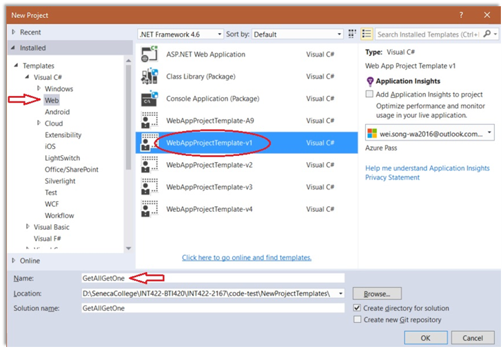
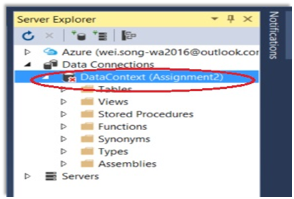
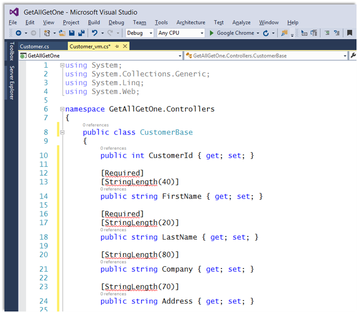
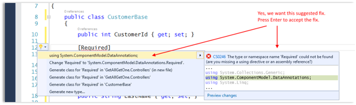
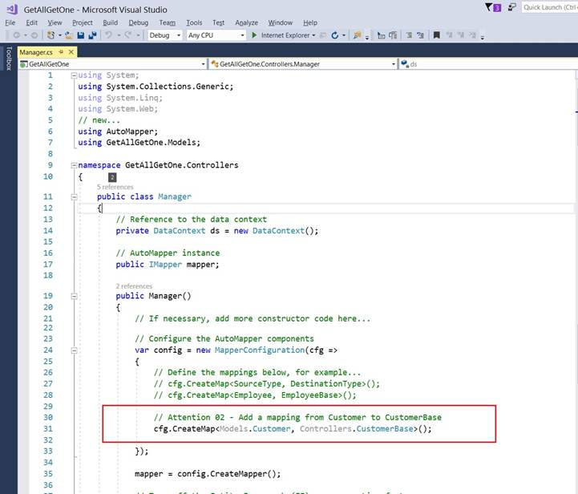
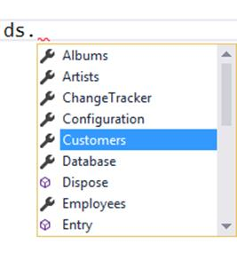
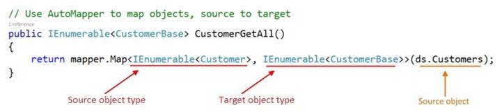
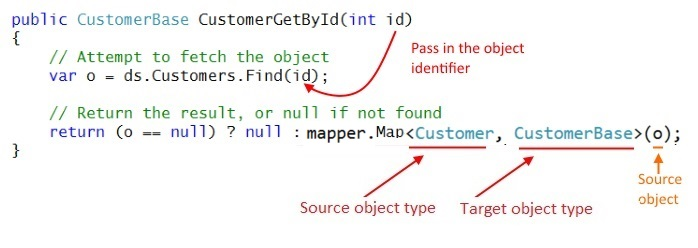
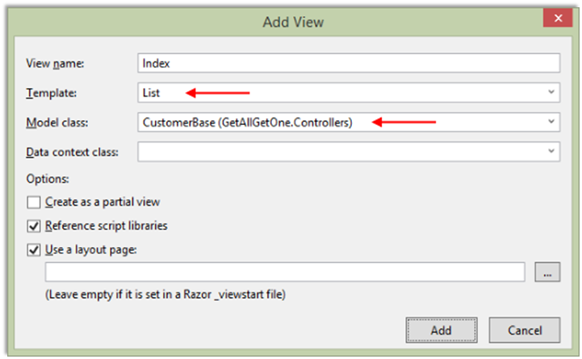
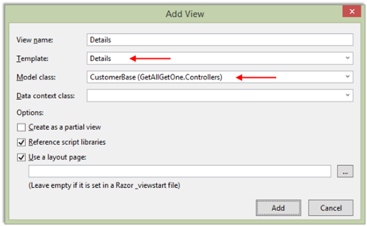

INT422 – Lecture 2
Work with a persistent data store.
Test today
Test 1 is today.
All tests in this course are hand-written. Pen or pencil. Answer styles will vary, but we’re mostly looking for short- to medium-length answers, and/or diagrams, and so on.
No references or resources are permitted – “closed book, open brain”.
The tested topics are mostly forward-looking. You will be tested on comprehension, understanding, and the application of the current week’s topics. For this week, it’s mostly the notes below, and the posted code examples. Also, you may be tested on a past recently-covered topic, which enables you to show that you have the foundational knowledge needed for current and future tasks.
For test 1, we will have the test at the end of the timeslot. Start from test 2, we’ll have the test at the beginning of the timeslot of the class. Today’s test will run about 12 minutes.
Textbook coverage
Last week, for the first class/session, Chapter 1 was assigned as a reading.
Then, for the second class/session in the computer-lab room, Chapters 2 and 3 were assigned as readings.
From now on, you will learn about the week’s topics in THESE class notes, and then use the textbook to supplement these notes. Use the table-of-contents and the index to locate the topic, and then read about it there.
Notice, and warning:
❝The textbook has code examples that directly use persistent storage, where controllers interact with the data context object.
We will NOT, and CANNOT, do that.
We MUST use view model classes. Unfortunately, the textbook does not work with the view model class topic, which is the most important topic and concept that you will learn and use in this course.
Code examples
Today: Using a persistent store – get all, get one
Next class: Using a persistent store – add new
Principal theme for next few weeks
The key objective for this course is: Create interactive web apps, which have some complexity, and can scale.
During the first week of the course, we were introduced to:
To make progress in the next few weeks, the teacher team will give you a project template that includes a pre-configured, ready-to-use database – also known as a persistent store – and all the program objects that enable us to interact with it. As a result, we can use the next few weeks to focus on learning how to create interactive web apps, without worrying about data storage.
Later in the course, we will learn to create our own data store, to support new projects and new data entities.
System design guidance
In term/level/semester 4, we begin to use an architectural model to guide us as we create larger and more complex apps. It presents a “layered” architecture, and you locate your source code modules within the architectural model.
Open and briefly study the diagram. Click to open the image full-size in a new tab/window.
Starting on the left side of the diagram, you will see the actors, who have use cases.
They interact with your web app’s views, which are defined by the cshtml source code files in your project’s Views folder.
Views get data from, or deliver data to, controllers. Last week, and in Assignment 1, you had a brief introduction to a view model class, which described the shape of the data object(s) coming in to, or leaving the controllers. You will learn much more about view models below.
Also today, several other pink or blue boxes will be introduced, including:
Let’s get started, in sequence.
Persistent data storage, in a database
Our web apps will use a relational database to persist data. The database is located in the App_Data folder. The web app’s Web.config settings file includes a connection string that is used to connect to and use the database.
As you know, Visual Studio includes an on-demand web server to host our web apps, to serve our needs as software developers.
Visual Studio also includes an on-demand instance-based SQL Server database server engine. When you run a web app that uses a data store, Visual Studio starts the web server, and the database server engine.
When you get to the point where you want to deploy your web app on a publicly-available host, you can configure a host-based database server engine as your data store. We learn about this later in the course.
Facade service, Entity Framework
In our web app code, we NEVER interact directly with the database. Instead, we use a facade service, also known as an ORM, or object-relational mapper.
The Microsoft Entity Framework enables C# programmers to work with objects in memory, and persist them in a relational database management system.
Another definition:
Entity Framework is an object design, management, and persistence framework.
Most ASP.NET MVC web apps include the Entity Framework. It is visible to us as two components, located in the project’s Models folder:
The data context class has a rich set of functionality. It includes properties for each and every entity that’s present in the data store. It also supports the typical range of data store operations, including querying and data modification (add, change, delete).
Design model classes
As defined above, design model classes describe the entities in the data store.
They are simple classes, consisting mostly of properties, and often constructors. The Entity Framework maps a class to a table in the database. Each property is a column in a table. Associations – “relationships” in a relational database management system – are defined by properties.
As noted above, design model classes are located in the Models folder. Optionally, you can also create a “class diagram” in that folder. A class diagram is a Visual Studio object that enables you to visually diagram (and design/edit) your classes.
Manager class, for app and business logic
Our controllers NEVER work directly with the data store.
Instead, we create a “manager” class, in the Controllers folder, to handle data service operations. This approach offers at least two benefits:
The Manager class has a reference to the data context. It has methods that can be called by controllers (e.g. “get all products”, “add supplier”, etc.).
Another design feature is that data sent to and delivered from Manager methods are based on view model classes. We NEVER leak information or details about the data store.
However, it is also possible that a Manager method can accept or deliver value types (i.e. int, double) or nothing. Therefore, for completeness, parameter or return types in Manager methods must be any one of these:
Thorough introduction to view model classes
A view model class is used when interacting with the browser user. It is typically used for three purposes.
1. Sending data to a view, for displaying/viewing.
2. Sending data to a view, to provide initial data and settings for an HTML Form.
3. Receiving data that was POSTed from a view that has an HTML Form.
A view model class is customized for the use case. It takes on the exact shape of the data needed to fulfill the use case.
Why have view model classes?
We follow some system architecture rules when building an app. The most important rule is this: We NEVER allow user-interaction code in controllers to get access to the app’s design (storage) model (i.e. the database). We ALWAYS use a layered approach. As a result, we need other classes that define the data that the user interacts with.
There are several advantages to using view model classes. The way our app works with data is more flexible and adaptable. Our code is safer, because user interaction data is customized. And many more.
What does a view model class look like?
As noted above, a view model class is customized for the use case. However, to simplify coding and understanding, it uses property names and types that match those in design model classes, plus other properties as required by the use case.
How do I create a view model class?
View model classes, for this course, should be written in source code files located in the Controllers folder.
We suggest that you create a separate source code file to hold the view model classes needed for each entity or entity group. For example, assume that you have a Suppliers and Products business domain model. Therefore, you should create a source code file named “Supplier_vm.cs”, and another named “Product_vm.cs”.
What classes do you write? The answer is totally and completely dependent upon your app’s use cases. However, there are some common and obvious use case patterns for data management:
To get started, create a class, and then copy the properties you want/need from the design model class. Then, customize, to match the use case.
You can also use inheritance when creating view model classes.
What names are used for view model classes?
Use a composite name – <entity> <use case>. For example, a class that includes the properties needed to fulfill the “add new” use case could be named “ProductAdd”. Another example: A class that is used for view/display purposes could be named “ProductBase”.
Follow these suggestions as you write view model classes for your first few apps.
Continuing the theme introduced above, assume a Suppliers and Products business domain model. A supplier can have zero or more products, and a product is always linked to one supplier.
Notice the use of the entity’s name in the classes. Notice also the inheritance chain.
<entity>List – a class that can be used in the user interface as a simple lookup list (e.g. drop-down list)
<entity>AddForm – a class that defines the data for an HTML Form
<entity>Add – a class that describes the data needed for a new object
<entity>Base – for get-some and get-one tasks
<entity>BaseWithAssociatedObject – for get-some and get-one tasks
<entity>EditForm – a class that defines the data for an HTML Form
<entity>Edit – for update-item tasks
<entity>Full – to deliver all (most) properties of an object
You do not have to write all these classes.
Conversely, you may need more classes to handle some use cases. Don’t be afraid of doing that.
Problem – two kinds of
classes: Design model, and view model
Solution: AutoMapper
Objects in the data store are defined by design model classes.
We have just learned that we can NEVER allow user-interaction code to work with these objects.
They must work with objects defined by view model classes.
How do we go back-and-forth between these kinds of objects? We use a technique named mapping.
And, we use a library named AutoMapper to help with this task. Jimmy Bogard created AutoMapper; here’s his blog post that has the introduction to AutoMapper.
It is a convention-based mapper: When it maps between objects, it simply maps/assigns values if both the property type and property name matches. Easy. Non-matching properties are ignored. (There are many other features, and you will learn some of them later in this course.)
Static and Instance API: In 4.2.1 version of AutoMapper and later, AutoMapper provides two APIs: a static and an instance API. In this semester of the INT422 course, you are requested to use the instance API in your all assignments. Failure to do so will result in a big penalty on the assignment grade(s).
How do you add AutoMapper to your app?
Via NuGet: In Solution Explorer, right-click your project, and choose “Manage NuGet Packages”. A dialog appears. In the left-side navigator, click/select “Online”. In the upper-right “search” area, enter (and look for) “automapper”. Then install it.
Introducing the “Web app project template v1” project template
Your team of professors has created a Visual Studio project template that can be used to create new web apps.
Its main feature is that includes a fully-configured data persistence scheme, based on everything described above. We will use it in the next few weeks, as we learn how to build interactive ASP.NET MVC web apps.
You can download the project template from the course’s website. Copy the “Web app project v1.zip” file to the following path. You must create the “Web” folder at the end of the path:
%userprofile%\Documents\Visual Studio 2015\Templates\ProjectTemplates\Visual C#\Web\
To go to this folder, open Windows File Explorer, then from the left panel, click Documents under My Computer, …
Then, when you choose File > New > Project in Visual Studio, the template will appear in the center panel, and can be selected to create new web apps.
How to: Use the “Web app project template v1” project template
In Visual Studio, create a new project (File > New > Project). A dialog appears.

In the center panel, select “WebAppProjectTemplate-v1”.
After the project loads, do a build/compile. This action will download the packages it needs.
In the project, double click the database file Chinook.mdf under the folder App_Data, Then the view of Server Explorer will show up.

If the item DataContext under the Data Connections has a red ✖ on it, that means the database need to be updated to a newer version. To do so, right click DataContext, select Data Connections…, change nothing and click OK.
Our work plan
Let’s use the template to build a web app. It will work with the “Customer” entity.
There are several tasks in the work plan. Here’s a list. Details follow.
Create a view model
In the controllers folder, create a source code file to hold a class that will describe a “customer” object.
A reminder: The source code file name has two parts:
Inside the source code file, we will create a “CustomerBase” class. As its name suggests, it will have the basic, or base, properties that describe a customer. You can edit the template-provided class name to complete this step.
An easy way to add the properties is to copy them from the Customer design model class (storage model) in the Models folder. For this example, we want the properties starting with CustomerId, and ending with Email. Ignore (do not copy) the other members. It should look like the following. 
Notice that some statements have errors. We can fix this, easily.
Click on one of the red-underlined statements. Press Ctrl+. (Control + dot or period). Visual Studio will analyze the code, and suggest some possible changes. 
Then, look at the list of “using” statements at the top of the source code file. Notice that it added the statement that references the data annotations namespace of classes.
The reason for the error message was simply that the source code file did not initially know about the need for data annotations. This technique – Ctrl+. – will be used frequently to enable Visual Studio to help you write better code.
Primary key
What is the primary key of the Customer design model class?
The CustomerId property.
How do we know this? By convention, the primary key is an int, and its name is either:
Now…
What is the primary key of the CustomerBase view model class?
Look for Id, or CustomerBaseId.
Did you find it? No. That will be a problem for the Visual Studio code generators (e.g. view scaffolder).
Can you fix this? Yes. Easily. Add a “key” attribute, just above the property declaration:
|
|
Create a mapper
At this point in time, we have a design model class named “Customer”.
We also have a view model class named “CustomerBase”.
We must “map” back-and-forth between design model and view model objects. Why? Remember the dominant system architecture rule: We NEVER allow user-interaction code in controllers to get access to the app’s design model. We ALWAYS use a layered approach. That means that we must map between objects.
AutoMapper, as you have briefly learned above, is a lovely library that will make our life better. It does the mapping.
The first mapping we need will map from a design model Customer class, to a view model CustomerBase class. When you write the “create map” statement, ensure that you include the namespace name.

Remember, after you write some code, ensure that there are no errors. Do a build/compile frequently.
In the Manager, create a “get all” method
As you have learned, the purpose of the Manager class is to “manage” all the data tasks and operations.
The manager has a reference named “ds”, to the data store.
Also, the manager has a reference named “mapper” to the instance of AutoMapper.
As stated in the source code comments, ensure that the methods accept and deliver ONLY view model objects and collections. The collection return type is almost always IEnumerable<T>, and it will be in this situation.
The ds reference knows about all the entity stores:

Customers is a DbSet<T> data type. In plain English, the data context class (DataContext, in the Models > DataContext.cs source code file) defines a DbSet<T> property for each entity in the database. DbSet and the superclass of DataContext (which is DbContext) are classes in the Entity Framework. DbSet inherits from a number of interfaces, including IEnumerable<T>, which is useful. And necessary, for AutoMapper to do its work.
So… ds.Customers is a collection of Customer objects from
the data store. We CANNOT return that collection directly. Instead, we MUST
transform it into a collection that’s defined by a view model class.
If you were to do this transformation in code, without AutoMapper, you would typically do this:
For example:
// Manually map objects, source to target
public IEnumerable<CustomerBase> CustomerGetAll()
{
// Define a new empty view model collection
var results = new List<CustomerBase>();
// Fetch all the objects from the data store
var allCustomers = ds.Customers;
// Manually map each source object to a target object
foreach (var customer in allCustomers)
{
// Create and configure a new target object
var c = new CustomerBase();
c.Address = customer.Address;
c.City = customer.City;
c.Company = customer.Company;
c.Country = customer.Country;
c.CustomerId = customer.CustomerId;
c.Email = customer.Email;
c.Fax = customer.Fax;
c.FirstName = customer.FirstName;
c.LastName = customer.LastName;
c.Phone = customer.Phone;
c.PostalCode = customer.PostalCode;
c.State = customer.State;
// Add the new target object to the results collection
results.Add(c);
}
// Return the results
return results;
}
With AutoMapper, it becomes a one-line statement:

In the Manager, create a “get one” method
If you skimmed the documentation for the DbSet<T> class, you may have noticed a Find() method. As stated in the documentation, “Finds an entity with the given primary key values. … If no entity is found in the [data] context or the [data] store, then null is returned.”.
That’s what we can use to “get one” object from the store. We use the primary key, which is in the CustomerId property, as you learned above.
The first task is to attempt to fetch a matching object from the data store.
Then, return the object, guarding against a null result, and using AutoMapper to transform it into a view model object.

Remember, after you write some code, ensure that there are no errors. Do a build/compile frequently.
Create a controller, add a reference to the manager
Add a Customers controller:
The controller must have a reference to a manager object. Therefore, at the top of the controller class, declare a private field for the manager, and initialize it during the declaration:
// Reference to a manager object
private Manager m = new Manager();
Modify the Index() method, to call the manager “get all” method
Above, you wrote the manager “get all” method. We will call that method, which will return a collection of CustomerBase objects, and then pass the collection to the view.
We have a choice to code this task as two statements, or as one statement. The choice depends upon whether you need to validate, transform, modify, or manipulate the fetched results, before passing them to the view. If you do, you can use a variant of this approach:
// Fetch the collection
var c = m.CustomerGetAll();
// Pass the collection to the view
return View(c);
Alternatively, if the fetched results are ready-to-use, you can simply call the method as the argument to the View() method. With a collection, we do not have to worry about a null result, because a collection with zero objects will simply return an empty collection. An empty collection is a valid object. Here’s the code:
return View(m.CustomerGetAll());
Create a “get all” view, using the scaffolder
Now, we can create the view. As you have learned (in Assignment 1), with the cursor anywhere in the Index() method code block, right-click and choose Add View. Complete the dialog as shown below:

Also, as you learned in Assignment 1, you can edit the view, to make its appearance and text content nicer.
At this point in time, you can run the app (Ctrl+F5). The /customers/index URI segment will show the list of customer objects.
Modify the Details() method, to call the manager “get one” method
Study the signature of the “get one” method. It accepts an int argument, presumably the object’s identifier.
What if the method is called with an empty/null identifier value? We must guard against that. How?
It is a best practice to change the signature of the “get one” method: The int data type can be changed to a nullable int, written as “int?”.
public ActionResult Details(int? id)
Then, a method on int? will be used, GetValueOrDefault(). If the value is valid (e.g. 3, 275, etc.), it will be used. If the value is NOT valid (e.g. null, “abc”, etc.), then the default value – zero (0) – will be used. This is a safe coding practice.
Next, if the return value is null, we tell the browser user, by returning HttpNotFound(). (Later in the course, you will learn a more elegant way to handle “not found” and other error-like results.)
Otherwise, pass the fetched object to the view.
Here’s the complete method body:
// GET: Customers/Details/5
public ActionResult Details(int? id)
{
// Attempt to get the matching object
var o = m.CustomerGetById(id.GetValueOrDefault());
if (o == null)
{
return HttpNotFound();
}
else
{
return View(o);
}
}
Create a “get one” view, using the scaffolder
Create the “get one” view. Complete the dialog as shown below:

Now, going back to the browser, the “Details” link for each of the items on the list of customers will work, and take you to a details view.
Also, as you learned in Assignment 1, you can edit the view, to make its appearance and text content nicer.
Adding more functionality – “add new”
Covered in the next class.